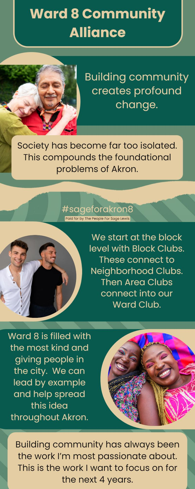

Timeline photos
WARD 8 COMMUNITY ALLIANCE
This is the big project I want to work on for the next 4 years as the Ward 8 City Council Person.
I'm calling it the Ward 8 Community Alliance.
The foundational building blocks of this idea is the Block Club concept. I feel like a Ward leader is probably the most ideal person to help lead a program like this.
Once we get a basic framework of Block Clubs organized then we can start organizing groups of Block Clubs. These will become Neighborhood Clubs. And then Neighborhood Clubs become Area Clubs. And Area Clubs become Ward Clubs. Ward Clubs become City Clubs. City Clubs become Region Clubs. Region Clubs become State Clubs. (You get the idea.)
Ward 8 is a perfect place to start this movement. Ward 8 citizens are kind and educated and thoughtful and caring. When I'm out meeting people I hear it over and over again: "We are doing well and we want everyone to do well."
Ward 8 is set to be a wonderful leader in humanitarian justice. Just look at all the signs in Ward 8 yards calling for social justice. It's incredible.
America has become so splintered and fractured. We are like an exposed nerve ready to explode at the slightest infraction.
We are all cancelling each other if we don't like the same ice cream flavor.
All of this is being compounded because we are living in our tiny little silos where we don't have to look at another person that has a different idea than ours. This is the opposite of what it means to be human. Humans are so amazing BECAUSE OF our differences. We adapt and change and experiment so beautifully.
Ward 8 has Trump supporters, Christians, Muslims, Atheists, racists, Universal Unitarians, progressives, communists, radicals, moderates. We are just like every other community in America. We are a wild stew of flavors and tastes. And as long as we don't seek to take away the rights and freedoms of other people, IT'S ALL GOOD.
(I've learned this in the homeless community so profoundly. I can't tell you how many White racist friends I have that are good friends with my Black racist friends. They live together in harmony because they have no other choice. They need each other and so they respect each other. (Most of the time.))
I am SO EXCITED about doing this work. This is the Number 1 reason I want to be the Ward 8 City Council Leader. I want to help us come together. I know how to do it and I've seen the power of uniting. It's the most beautiful thing on Earth.
PLEASE VOTE FOR ME ON MAY 2, 2023 AS THE WARD 8 AKRON CITY COUNCIL PERSON.
I have a vision for where we can go and Ward 8 is the perfect place to start.